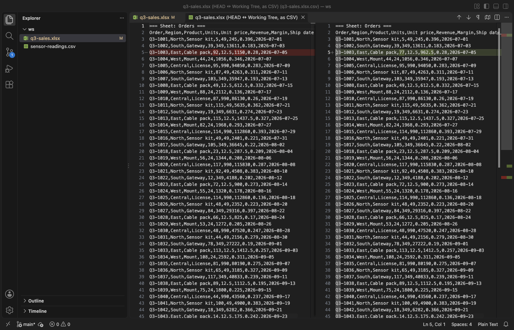

Open files in VS Code and Cursor / Tables and data
Compare two Parquet files
Git and VS Code only say that two Parquet files differ, because the format is binary. Table Viewer (listed as XLSX Viewer & Excel Viewer) reads both files and opens them as CSV text in the VS Code diff editor, so changed, added and removed rows are marked. "Compare with Another Table File..." takes two files and "Compare with Git HEAD" takes the last commit, both free. Zovo Pro (USD 19 once) adds JOIN with other files, which matches the rows of two files by a key column in SQL, with 3 free tries.
Free, MIT license. Extension ID zovo.table-viewer-vscode, version 0.5.7. Needs VS Code 1.90.0 or newer.

Steps in VS Code
- Install Table Viewer from the Marketplace, or press Ctrl+P (Cmd+P on macOS) and run
ext install zovo.table-viewer-vscode. - Select the two
.parquetfiles in the Explorer (Ctrl+click, or Cmd+click on a Mac), right-click one of them and pick "Compare with Another Table File...". With one file, the command asks for the second one. - For a Parquet file in a Git repository, right-click it and pick "Compare with Git HEAD". Table Viewer reads the committed version with
git cat-file. - Read the diff. Each row is one CSV line with a header line on top, so changed, added and removed rows show like changed lines of code.
- The diff uses the stored values. Rows are compared in file order, so sort both files the same way before you write them if the row order may change.
Where Zovo Pro saves time
Both compare commands are free, and so are opening Parquet files as a table, the Schema panel, sort, filters and SQL queries on one file. You can also mix formats, such as last week's CSV export against this week's Parquet file. A Compare button in the table toolbar offers both commands for the open file.
A line diff works well for edits in place. When rows were added in the middle or the order changed, a key match tells you more. JOIN with other files lets one query read both Parquet files and match rows by ID, so you can list new rows, missing rows and changed values. The other Pro tools in Table Viewer are whole-file queries past the table limits, Save as Parquet, Combine Files and Sheets and Split Table by Column Value.
With JOIN with other files (Zovo Pro)
- Open the new Parquet file in Table Viewer and click Query.
- To list rows that are new, run
SELECT n.* FROM this n LEFT JOIN 'old.parquet' o ON n.id = o.id WHERE o.id IS NULL. - To list changed values, run
SELECT n.id, o.price, n.price FROM this n JOIN 'old.parquet' o ON n.id = o.id WHERE n.price <> o.price. Each query that joins another file uses one of the 3 free tries.
JOIN with other files works 3 times on your computer before it asks for a license, and a try counts only when you get a result. Opening a file shows no popup and no countdown.
Zovo Pro costs USD 19 once. It is not a subscription, and it turns on the Pro tools in every Zovo extension, not only Table Viewer. After a card payment (Stripe) your license key shows on the next page. In VS Code, run "Zovo Pro: Enter Zovo Pro license key" from the Command Palette and paste it. The key is checked on your computer, with no network call. With GitHub Sponsors, pick the "$19 one time" tier, then run "Zovo Pro: I already paid: unlock with GitHub Sponsors" and sign in with the same GitHub account. With PayPal, send USD 19 with "Zovo Pro" in the note and the key comes by email within a day.
A team of 5: USD 59 once, by card or by PayPal. Every rule and every Pro tool is on the Zovo Pro page.
Steps in Cursor, Windsurf or VSCodium
- Open the Extensions view with Ctrl+Shift+X (Cmd+Shift+X on macOS).
- Search for
zovo.table-viewer-vscodeand click Install. Cursor, Windsurf and VSCodium install from Open VSX, where it is published aszovo/table-viewer-vscode. - If your editor has no gallery, download the .vsix from the Open VSX page and run "Extensions: Install from VSIX...".
- Then use it the same way as in VS Code.
What Table Viewer handles
- Parquet (
.parquet,.pq) with snappy, gzip, zstd, brotli or lz4 compression. - CSV, TSV, Excel and ODS files, also mixed with Parquet in one compare.
- The committed version from Git HEAD, read on your computer with repository hooks switched off.
- Excel workbooks, with one section per sheet.
What it does not do
- Each table is compared up to 100,000 rows (setting
tableViewer.maxCompareRows). Past that, the text ends with a note. - It is a line diff. A row that moved shows as removed in one place and added in another.
- Compare with Git HEAD needs a trusted workspace and a file on this computer.
- A file stored in Git LFS shows a note instead of a diff.
Other options
- DuckDB.
SELECT * FROM 'new.parquet' EXCEPT SELECT * FROM 'old.parquet'lists rows that are only in the new file. Free, needs an install. - pandas.
read_parqueton both files, thenDataFrame.compareor a merge withindicator=True. Needs Python with pyarrow. - A Git diff driver. A
textconvsetting that dumps Parquet to text makesgit diffreadable. You set it up once per repository.
Install counts and Open VSX status were checked on 13 November 2026. Descriptions in quotes are the extensions' own.
Questions
Does it compare the schema too?
The diff shows the header line, so added, removed or renamed columns show. For the types of each column, open both files and use the Schema panel.
What if the two files are the same?
With Compare with Git HEAD, a message says that the values are the same as in HEAD and that only formatting may differ. The diff still opens.
Can I compare two very large Parquet files?
The diff holds up to 100,000 rows per file by default. For more, raise tableViewer.maxCompareRows or compare by key with a query.
Does it work in Cursor or Windsurf?
Yes. Cursor, Windsurf and VSCodium install extensions from Open VSX. Search for the extension in their Extensions view and install it there.
More about Table Viewer
Read the Table Viewer page for every feature and setting, or the source code on GitHub.
Related guides
- XLSX, Excel, CSV & Parquet Viewer on the VS Code Marketplace (also on Open VSX). Opens xlsx, xls, csv and parquet files as a sortable table with SQL filters.
- Open an Excel .xlsx file in VS Code
- Open an Excel file in Cursor
- See a CSV file as a table in VS Code
- Open a Parquet file in VS Code
Zovo Pro and support
Zovo Pro: USD 19 once, every Zovo viewer. It turns on the Pro tools in this extension and in the other Zovo extensions you use. The free features stay free.
After a card payment your license key shows on the next page. Paste it with the command "Zovo Pro: Enter a key".
You can also support the work with no Pro:
Need your format supported?
Open a format request with a sample file, and I reply there whether it can be done. For USD 299 once, through this GitHub Sponsors tier, I add your file format or a missing feature to this extension, with tests, within 7 days.